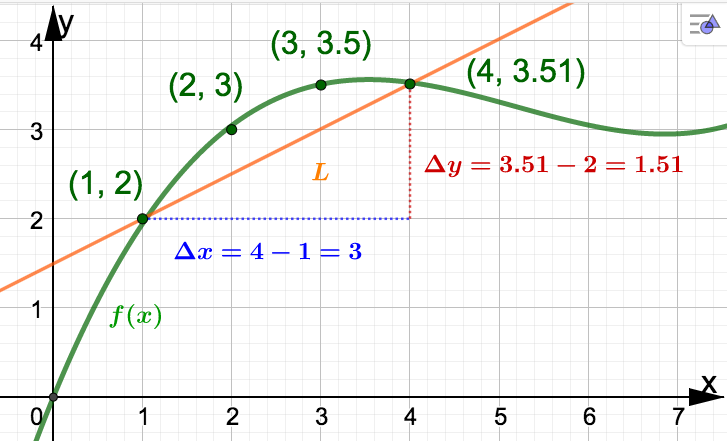
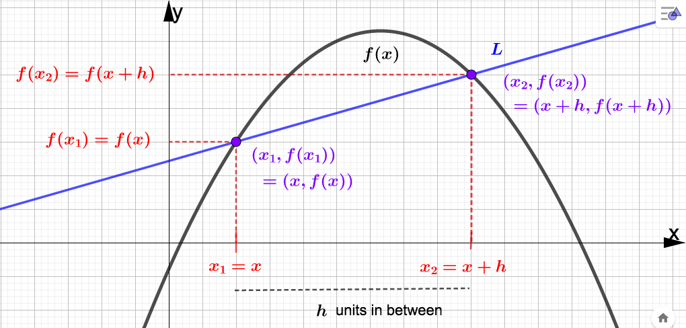
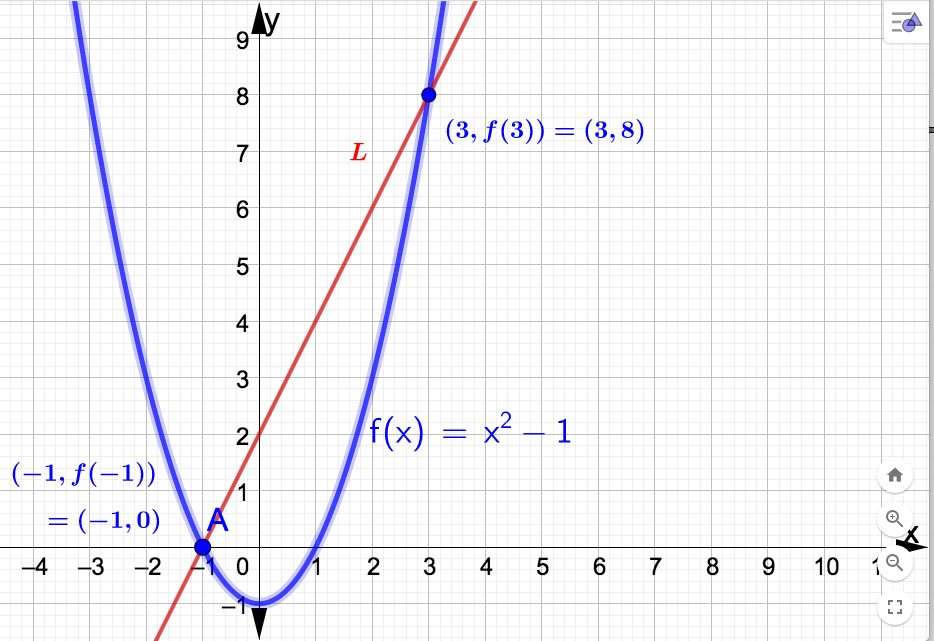
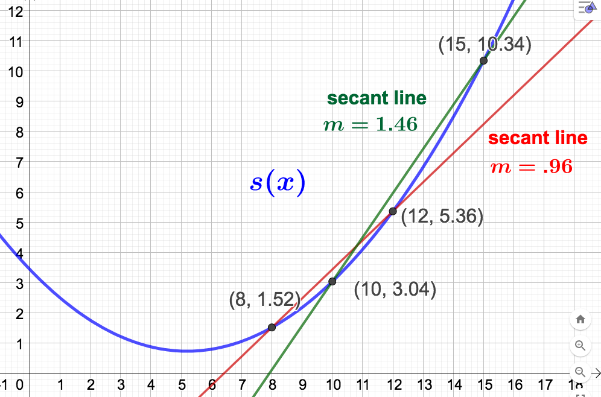

Section 3.2 Average Rate Of Change
Much of applied calculus involves an investigation of how one quantity changes with respect to another. There are two types of rates of change we will consider:
- Average Rate of Change (AROC)
- Instantaneous Rate of Change (IROC)
To distinguish between these concepts, consider how your position in a vehicle changes with respect to time traveled. Suppose you drove 130 miles in \(t=2\) hours (say from 1 pm to 3 pm). Then you drove an average of \(\dfrac{130 \: \textrm{miles}}{2 \: \textrm{hours}} = 65 \: \dfrac{\textrm{mi}}{\textrm{hr}}\text{.}\) So, \(65 \: \dfrac{\textrm{mi}}{\textrm{hr}}\) is the AROC of your position over the time interval \([0,2]\text{.}\) On the other hand, suppose you look at your speedometer at 2 pm (\(t=1\) hour into your trip) and it reads \(68 \: \dfrac{\textrm{mi}}{\textrm{hr}}\text{.}\) Then your IROC at \(t=1\) hour into your trip is \(68 \: \dfrac{\textrm{mi}}{\textrm{hr}}\text{.}\)

- How many backpacks did ADTF Distributors sell as a result of increasing spending on advertising from $100 to $400? Solution.For an increase of spending from $100 to $400 we look at what happens as \(x\) increases from 1 to 4. In this case we see that \(f(x)\) increases from 2 to 3.51. Since 3.51 - 2 = 1.51 we find that ADTF Distributors sold an additional 1,510 backpacks as a result of increasing the amount spent on advertising from $100 to $400.
- As money spent on advertising increased from $100 to $400, what was the average number of backpacks sold per hundred dollar increase? Solution.We need to determine the average change in \(f\) as \(x\) increases from 1 to 2, then 2 to 3, and finally 3 to 4. Respectively, these changes are 3-2=1, 3.5-3 = .5, and 3.51 - 3.5 = .01. The average of these three numbers is\begin{equation*} \dfrac{1+.5+.01}{3} = \dfrac{1.51}{3} = .50\bar{3} \end{equation*}Alternatively, this is is the same as as finding \(\dfrac{\Delta f}{\Delta x}\) over the \(x-\)interval \([1,4]\)\begin{equation*} \dfrac{\Delta f}{\Delta x} = \dfrac{3.51 - 2}{4-1} = \dfrac{1.51}{3} = .50\bar{3} \end{equation*}We conclude that as money spent on advertising increased from $100 to $400, ADTF Distributors' sales increased on average by approximately 503 backpacks per hundred dollar increase spent on advertising. This number is average rate of change of \(f\) as \(x\) goes from 1 to 4. That is,\begin{align*} \textrm{AROC} \amp = \dfrac{\Delta f}{\Delta x} = \dfrac{f(4) - f(1)}{4-1} = \dfrac{3.51-2}{4-1} \\ \amp = .50\bar{3} \: \dfrac{\textrm{backpacks (in thousands)}}{\textrm{dollars (in hundreds)}} \end{align*}
Observe that the slope of the line \(L\) through the points \((1,2)\) and \((4,3.51)\) in Example 3.2.1 is the same as the AROC of \(f\) over the \(x-\)interval \([1,4]\text{.}\) A line that goes through two specified points on the graph of a function, as \(L\) does, is called a secant line. Note that every AROC is the slope of some secant line (and vice versa).
Definition 3.2.2.
The average rate of change (AROC) of \(f\) as \(x\) goes from \(x_1\) to \(x_2\) is given by
\begin{equation*}
\textrm{AROC} = \dfrac{f(x_2) - f(x_1)}{x_2 - x_1},
\end{equation*}
which is also the slope of the secant line through the points \((x_1,f(x_1))\) and \((x_2,f(x_2))\text{.}\)For future work with derivatives, let's change the labeling in the AROC formula. Assume \(x_1 \lt x_2\) and that there are \(h\) units of distance in between \(x_1\) and \(x_2\) (we are assuming \(h \gt 0\) here). Let \(x_1 = x\) so that \(x_2 = x + h\text{.}\) Then the AROC formula in the above definition becomes
\begin{equation*}
\dfrac{f(x_2) - f(x_1)}{x_2 - x_1} = \dfrac{f(x +h) - f(x)}{(x+h) - x} = \dfrac{f(x +h) - f(x)}{h}
\end{equation*}
The quantity on the right is another way to express the AROC of \(f\) and is also called the difference quotient of \(f\text{.}\) As before, it still represents the slope of the secant line through \((x,f(x))\) and \((x+h, f(x+h))\text{.}\) Below is a graph illustrating both versions of the AROC formula and the corresponding secant line.

Example 3.2.3.
With \(x_1= -1\) and \(x_2 = 3\) we have
\begin{align*}
\textrm{AROC} \amp = \dfrac{f(x_2) - f(x_1)}{x_2 - x_1} = \dfrac{f(3) - f(-1)}{3-(-1)} \\
\amp = \dfrac{3^2 - 1 - ((-1)^2-1)}{3+1} = \dfrac{8-0}{4} = 2
\end{align*}
Remember, this is a rate of change, so given a context, the units would be:
\begin{equation*}
2 \dfrac{\textrm{units of output variable}}{\textrm{units of input variable}}
\end{equation*}
Example 3.2.4.
First, we simplify the differene quotient:
\begin{align*}
\dfrac{f(x +h) - f(x)}{h} \amp = \dfrac{(x+h)^2-1 - (x^2-1)}{h} \\
\amp = \dfrac{x^2 + 2xh + h^2 -1 -x^2 +1}{h} \\
\amp = \dfrac{2xh + h^2}{h} = \dfrac{h(2x+h)}{h} = 2x + h.
\end{align*}
With \(x = x_1 = -1\) and \(h = 3 - (-1) = 4\) we have
\begin{equation*}
\textrm{AROC} = \dfrac{f(x +h) - f(x)}{h} = 2x + 4 = 2(-1) + 4 = 2
\end{equation*}
Compare this with Example 3.2.3. Below is the graph of \(f(x) = x^2 -1\text{.}\) Included in the graph is the secant line \(L\) through \((-1,f(-1))\) and \((3,f(3))\text{.}\) The slope of \(L\) equals the AROC calculated above, which is 2. 
Example 3.2.5.
\begin{equation*}
s(x) = \frac{1}{100}(10x^2-104x+344),
\end{equation*}
where \(x\) is the number of years since 2000, and \(s(x)\) is sales (the number of vinyl records sold) in millions. - Find the simplified difference quotient for \(s(x)\text{.}\) Solution.With \(\dfrac{1}{100}\) factored out of each term in the numerator, we have\begin{align*} \dfrac{s(x+h)-s(x)}{h} \amp = \dfrac{1}{100} \dfrac{10(x+h)^2 -104(x+h) +344 - (10x^2-104x+344)}{h} \\ \amp = \dfrac{1}{100} \dfrac{10x^2 + 20xh +10h^2 -104x -104h + 344 -10x^2 +104x -344}{h} \\ \amp = \dfrac{1}{100} \dfrac{h(20x + 10h - 104)}{h} = \dfrac{1}{100} (20x + 10h -104) \end{align*}
- Find and interpret the average rate of change of vinyl record sales from 2008 to 2012. Solution.The years 2008 and 2012 correspond to input values 8 and 12 resprectively. Using our work from part (a) with \(x=8 \) and \(h=12-8 = 4\) we have\begin{equation*} \textrm{AROC} = \dfrac{1}{100}(20(8) + 10(4) -104) = .96 \: \dfrac{\textrm{million records}}{\textrm{year}} \end{equation*}This means: From 2008 to 2012, vinyl record sales increased an average of 960,000 vinyl records sold per year. That is, 960,000 is the average yearly INCREASE in vinyl records sold for this four year span.
- Find and interpret the average rate of change of vinyl record sales from 2010 to 2015. Solution.The years 2010 and 2015 correspond to input values 10 and 15 resprectively. Using our work from part (a) with \(x=10 \) and \(h=15-10 = 5\) we have\begin{equation*} \textrm{AROC} = \dfrac{1}{100}(20(10) + 10(5) -104) = 1.46 \: \dfrac{\textrm{million records}}{\textrm{year}} \end{equation*}This means: From 2010 to 2015, vinyl record sales increased an average of 1,460,000 vinyl records sold per year. That is, 1,460,000 is the average yearly INCREASE in vinyl records sold for this five year span. Below is the graph of \(s(x)\) and the secant lines corresponding to the AROCs calculed in parts (b) and (c).